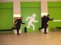
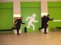
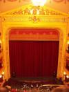
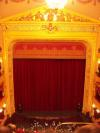

Vuoden 2004 suurimpaan Mukamatkat leisure experience -lomakokemukseen otti osaa ennätysmäinen joukko ihmisiä. Henkilökunnan osallitujana matkalla olivat Tuomas Primary Controller Mettänen, Sami Secondary Liutenant Kerola ja Lasse Oopperavastaava (trainee) Mettänen. Primary controllerin ansioikkaasti kirjoittama matkasuunnitelman näytti tällä kertaa tältä.
From tuomas@nospam Thu Jul 1 18:45:10 2004
Date: Wed, 26 May 2004 10:55:05 +0300 (EEST)
From: Tuomas Mettanen <tuomas@nospam>
To: kerolasa@iki.fi, lasse.mettanen@nospam
Cc: tuomas@nospam
Subject: Mukamatkojen oopperamatka ulkomaille kesäkuussa.
Hyvää päivää,
Tahtoisin tässä kertoa hieman ulkomaille suuntautuvasta oopperamatkastamme jolle olette ystävällisesti osallistumassa. Muistattehan varautua pukeutumiskoodeihin, puku jossa kravatti pakollinen.
Sunnuntai-aamu 20. kesäkuuta
Lähtö tapahtuu Helsinki/Vantaan ulkomaan terminaalista terveelliseen aamuaikaan eli kello 6:50. Kokoonnumme Primary Controller Tuomas Mettäsen, Secondary Liutenant Sami Kerolan sekä Ooppera-asiantuntija Lasse Mettäsen johtamana joukoksi. Lennämme viihtyisällä SAS-yhtiön lentokoneella ensin Kööpenhaminaan jossa vietämme vajaa kaksi tuntia tutustumalla paikallisen lentoaseman nähtävyyksiin. Prahaan saavumme kello 10:40.
Tiistai 22. kesäkuuta
Vaatteet vaihtuvat rennompiin ja toiseen silmään vaihtuu eri väri. Lähdemme siis kuuntelemaan David Bowien nykyistä keikkakuntoa Prahassa. Mukana menossa Prahan yhdyshenkilömme Jana. Ennen konserttia ja konsertin jälkeen Mukamatkojen olutfestivaali.
Perjantai/Lauantai 25/26. kesäkuuta
Keräämme Prahasta asiakkaan nimeltä Filip Tomasek ja jäämme kadulle odottamaan. Kadulle toimitetaan hyväkuntoinen vuokra-auto jolla matkustamme Beethovenin kotikaupunkiin Bonniin. Bonn sijaitsee Saksassa ja on kuuluisa.
Kello 19:00, saavumme Bonnin oopperataloon nauttimaan Philip Glassin teosta nimeltänsä Satyagraha. Yövymme todennäköisesti lauantain/sunnuntain välisen yön hotellissa. Sunnuntaina palaamme toivottavasti samalla vuokra-autolla takaisin Tsekkiin. Auto on käytössämme koko viikonlopun joten tänä aikana tutustumme maan ominaisuuksiin paikallistasolla.
Tiistai 29. kesäkuuta
Aamupalan jälkeen vapaamuotoista liikuntaa ja pukujen silittelyä. Iltapäivällä Primary Controller Tuomas Mettänen pitää alustuksen illan näytöksestä. Illalla kello 19:00 saavumme Narodni Divadlo rakennelmaan, tuttavallisemmin Kansallisoopperaan ja valmistaudumme tarkastelemaan kriittisin korvin Philip Glassin sävelmää Belle et Bete, (Nätti ja hirviä). Tämän jälkeen voimakastahtoisimmat jatkavat vielä klubiravintola Roxy:n suuntaan jossa esiintyy viihteellinen ranskalaisyhtye Air.
Keskiviikko 30. kesäkuuta
Pikaisen aamupalan ja verryttelyn jälkeen palaamme Prahan lentokentälle josta lähdemme lennolla kello 10:15, piipahdamme verestämässä muistoja Kööpenhaminassa, lähettelemme kortteja ja saavumme Helsinkiin kello 16:00.
Primary Controller toivottaa antoisaa odotusta!
Alla vielä sama lyhyessä muodossa:
SU 20.6 06:50 Lähtö Helsinki/Vantaa.
TI 22.6 19:00 David Bowie, Praha.
PE 25.6 06:50 Lähtö Prahasta Bonniin.
LA 26.6 19:30 Philip Glass: Satyagraha, Bonn.
SU 27.6 06:50 Lähtö Bonnista Prahaan.
TI 29.6 19:00 Philip Glass: Belle et Bete.
TI 29.6 23:00 Air, Praha.
KE 30.6 10:15 Paluu Helsinkiin.
.tuomas
Matkapäivä nolla
Kokoontuminen Primary Controllerin asuin residentsiin. Aurinkoisen päivän iltana pohdimme, että rahaa voi säästää siten, ettei kadota arvokkaita esineitä tai asioita. Säästyneet rahat voi käyttää parhaaksi katsomalla tavalla ja iloita matkasta, joka on paljon halvempi kuin se olisi voinut olla. Erityisen iloinen voi olla silloin, jos löytää hukkaamansa tavaran. Tällöin matkustaja on suorastaan velvollinen käyttämään hukkaamansa, jonka jälkeen uudelleen löytämänsä, tavaran arvon verran rahaa johonkin toiseen tarkoitukseen.
Matkapäivä I
Mukamatkojen hallintoneuvostolle huomautus: "Nupit Kaakkoon -
Lounasmatka Intiaan" -projektia täytyy alkaa suunnittelemaan. Idea syntyi
palmujen katveessa Kööpenhaminassa.
Matkapäivä II
Secondary Liutenant haluaisi muistuttaa kanssamatkustajiaan, parista asiasta. Aluksikin aamu ei suikaan valkene vaan pimeys poistuu. Toisekseen maailma ei missään tapauksessa ole pyöreä vaan vino. Maailman vinouden huomaa helpoiten katsomalla SAS:n europasta pohjoisameriikkaan suuntautuvien lentojen karttaa.
Oopperavastaava sen sijaan havaitsi, että Ravel keksi Boleron
rytmin Prahalaisen junan inspiroimana. Tähän Bolero-junaan voi tutustua
Prahassa Nusle:n kaupunginosassa. Bolero-junat menevät aina kohti kaupunkia.
Mukamatkojen henkilökunta ei suosittele kaupungista lähtevien junien
kuuntelemista, niiden rytmiikkaa on huomattavan tylsää kuunnella. Päivällä
tutustuimme Prahaan. Tähän mennessä ei muuten mitään ole mennyt hukkaan, joten
kävimme sen kunniaksi illallisen Fratello ravintolassa.


Myöhemmin illala oleilimme ja otimme taidekuvan Janan
asunnossa.

Matkapäivä III
Primary Controller nukkui päiväistä noin 65-75%. Jalkapallossa Tanskan ja Ruotsin tulisi käyttää niin kutsuttua picnik -taktiikkaa. Taktiikkaan kuuluu se, että pelipaidat otetaan pois päältä ja laitetaan nurmikolle suurehkoksi kangasalueeksi. Aluetta voi sitten käyttää smörgåsien syömiseen. Tämä picnik -taktiikka myös johtaisi siihen, että saksa tipahtaa kisoista todennäköisemmin. Tänään oopperavastaava muutti nukkuma residentsinsä asumuksemme eteläsiipeen. Kävimme illallisella Fratellossa, josta saimme matkamuistoksi ympäripyöreän runon:
125,- II 250
128,- 128
31,- III 93
108
-----
579,
18,-IIIIII
Matkapäivä IV
Aamiainen Fratellossa. Vladimir perui tapaamisen Mukamatkojen henkilökunnan kanssa. David Bowie keskeytti keikkansa sanoihin "I'm in therible pain, I have nerv pinch. Sorry, I can't continue". Keikka oli kuitenkin kelvollinen. Mukamatkojen henkilökunnalle itselleen päivä oli pitkä, mutta raskas. Seconrary Liutenantille maistui olut. Jätimme jopa päiväunet välistä. Tällä välin jalkapallossa Saksa tippui.
Matkapäivä V
Aamiainen Fratellossa. Paljon lepoa. Tapasimme Vladimirin ja
saimme kielikurssin. Dêkuji (kiitos), dobrou noc (hyvää yötä) ja dobrë räno
(hyvää huomenta). Illalla seurasimme futismatsia mukamatkojen asiakaan Filipin
kanssa. Englanti tippui, Prahassa olevat britit alkoivat käyttäytymään hyvin
huonosti putoamisensa johdosta. Ei ihme ettei heistä pidetä missään.
Matkapäivä VI
Kello 00:04 Secondary Liutenant pitää museokierroksen matkan
muille osallistujille.
Hiemaisen levon jälkeen jouduimme toteamaan, että
autovuokrausyritys Hertz ei oikein hallitse toimiaan. Primary Controller
odottelee auton tuojaa kohtauspaikalla yli tunnin, eikä mitään tapahdu jolloin
Primary Controller liittyy muun henkilökunnan seuraan Fratelloon ja syö
pikaisen pitsan. Tällä välin Hertz sählää omiaan jolloin Vladimir, jonka
kunniakkaalla avustuksella vuokra-auto alunperin hankittiin, neuvoo kuinka
asiakkaita kohdellaan. Hyvin pian saamme Skoda Octavian, jossa on 1.6l kone ja
ilmastointi.
Koeajo suoritetaan Kutna Horaan, missä oli tarkoitus nähdä
Mukamatkojen henkilökunnalle matkakohdeeksi suositeltua luukirkkoa.
Ensimmäiseen kirkkoon saavuttuamme näemme erittäin komean katedraalin, muttemme
luun luuta. Seuraava Kutna Horasta löytämämme kirkko on remontissa. Sitkeän
etsiskelyn jälkeen luukirkko löytyy, ja se todellakin on erittäin vaikuttava.
Kirkko kuuluu tästä lähtien Mukamatkojen virallisten kohteiden joukkoon.

Palasimme Prahaan ja haimme matkustaja Filipin bensa-asemalta ja jatkamme matkaa kohti Saksaa. Yöpyminen tapahtui Hotel Primdassa. Ranska tippui.
Matkapäivä VII
Primdan pihalta löysimme erikoisia esineitä. Primary Controller
yritti päästä yhdellä esineistä teleportata Bonniin, yritys epäonnistui.


Fun on autobahn. Primary Controller tunsi Bonnin kuin vasta-avatut
taskunsa. Satyagraha oli ooppera siitä paremmasta päästä. Bonn music hall eli
jonkin asteen oopperatalo on ruma. Suosittelemme myös välttämään permannon
rivejä 21+, sillä silloin on parven alla ja kuuluvuus muuttuu hyvin huonoksi.
Kaupunkina Bonn on ankea, kuollut ja itäsaksahtava läjä. Emme suosittele Bonnia
kenellekään. Ruotsi tippui.

 

Matkapäivä VIII
Paluumatkalla kävimme tutustumassa Saksalaiseen pikkutiehen.
Havaitsimme myös, että Saksalaisilla on tapana numeroida puut.


Takaisin autobahnille. Törmäsimme stoj:hin eli ruuhkaan.
Matkustusnopeus oli tuolloin 10 kilometriä kahdessa tunnissa. Autobahnan
reunalla näimme näytteille asetetun Concorden, mikä pystyy kuvasta havitsemaan
pakettiauton takaa. Tutuistuimme myös Hockenheim autourheilurataan. Prahaan
päästyämme mittarissa luki 1720 kilometriä. Tanska tippui.
Matkapäivä IX
Mukamatkojen henkilökunta tutki kielellistä kuriositeettiä ja tuli siihen tulokseen ettei "Kokko, kokoo kokoon koko kokko. Koko kokkoko? Koko kokko." ole niin kovin merkillinen. Mukamatkojen oma kielellinen kuriositeetti on "Erkki Tohva, rakenna nuotio. Nuotio? Nuotio". Oopperavastaava joi elämänsä ensimmäisen kerran tequilaa.
Matkapäivä X
Secondary Liutenant keksi Teemulle häälahjan ja tuli siinä sivussa
herättäneeksi kaikki. Päivällä tutustumis käynti Herna 666
peliautomaattibaariin. Päätimme myös tallentaa Prahalle tyypilliset ovet. Belle
et Bete oli visuaalisesti upea ooppera. Viime vuonna musiikki teki Primary
Controlleriin ja Secondary Liutenanttiin suuremman vaikutuksen, muttei se ollut
täysin huonoa tälläkään kerralla. Tänä vuonna libretto oli myös englanniksi ja
se edes auttoi oopperan ymmärtämistä huomattavasti.
 

Oopperan jälkeen söimme Janan, Davidin, Filipin, Barbaran ja
Erikan kanssa. Filipille jäimme Bonnin matkasta oopperalipun verran velkaa ja
se tullaan maksamaan hänelle kesällä 2006 Savonlinnassa.


Matkapäivä XI
David vei meidät kentälle, ja tästä hänelle kunnia maininta. Saapuminen Helsinkiin, jossa lämpötila +14 astetta ja sateista. Mukamatkojen hallintoneuvosto päätti ottaa Oopperavastaavan tittelistä trainee sanan pois. Näin ollen Lasse Mettänen on Mukamatkat leisuresuit traveling circuitin pysyväisjäsen ja virkailija.
{kind=link}
{kind=link}
{kind=link}
{kind=link}
{kind=link}
{kind=link}
{kind=link}
{kind=link}
{kind=link}
{kind=link}
{kind=link}
{kind=link}
{kind=link}
{kind=link}
{kind=link}
{kind=link}
{kind=link}